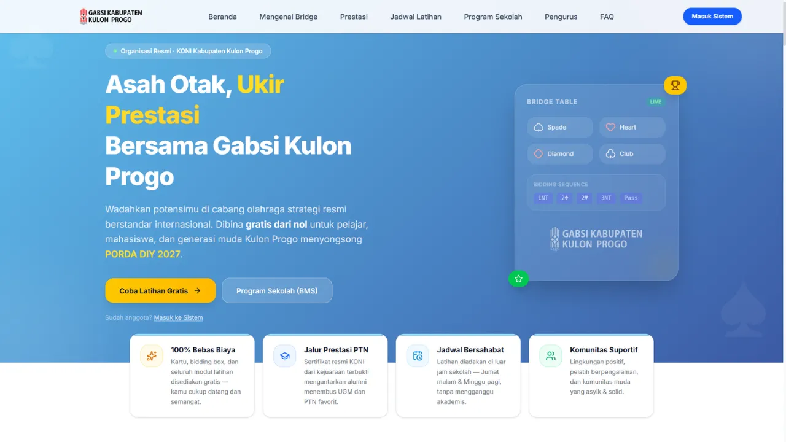

On Progress • 2026
Official Organization
Portal
Freelance - Portal Web Resmi & Media Promosi Olahraga Bridge (gabku.or.id)
Merancang dan mengembangkan halaman landing page resmi untuk Pengurus Kabupaten GABSI Kulon Progo yang akan dipublikasikan pada domain gabku.or.id. Berfungsi sebagai pusat informasi publik, publikasi turnamen, pengenalan edukasi olahraga contract bridge, serta etalase digital prestasi atlet daerah.
Web Development
Responsive UI/UX
gabku.or.id
Arsitektur Web